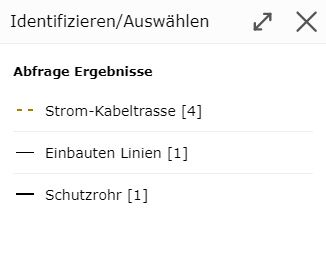

Query
A query is done by clicking on a geo-object with a corresponding query tool. The various query tools are located in the toolbox, in the Query section.
This section will be covered in more detail later. Here, only the basic principle of querying is shown, i.e. querying with the standard tool.
Standard Tool
When you open the map viewer, the standard or default tool is usually active. This tool is always active when no other tool from the toolbox is active.
On desktop, this tool can be recognized by the mouse cursor: a pointing finger with a blue (i).
The pointing finger indicates that the standard tool can be used to pan the map extent. The blue (i) stands for identifying geo-objects.
The following functions can be performed with the standard tool:
Panning the map extent while holding down the mouse button
Zooming the map extent in/out with the mouse wheel
Querying the attribute data of a geo-object by clicking
Note
The first two points also work with almost all tools from the toolbox.
Note
On (mobile) devices with touch operation, clicking on the map works via the Click Bubble tool (see the Click Bubble section under Tools). The advantage of the click bubble is that it avoids accidental clicks while navigating and provides higher precision when clicking.
Clicking on the map with the tool queries the geo-objects of all topics for the desired location, for which a query is allowed (and which are also visible based on the topic visibility settings and the scale).
If the query was successful and unambiguous, the results are shown immediately. The query is not unambiguous if geo-objects from different topic layers are found. If that is the case, a dialog opens in which the desired topic can be specified:

Along with the name of the topic layer, an icon from the topic’s legend is also shown, which can be helpful for selecting the desired topic layer. In addition, it is also shown (in square brackets) how many objects are affected by this query.
Once a topic layer is selected, the query becomes unambiguous and the results are shown.
Note
The intermediate step described here is necessary because the map viewer can only ever show the query and search results of exactly one topic layer at a time.